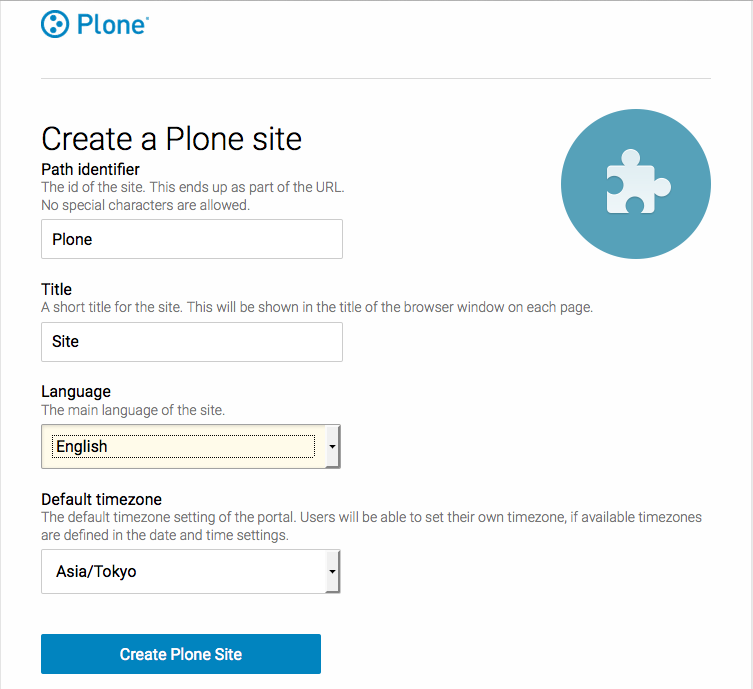
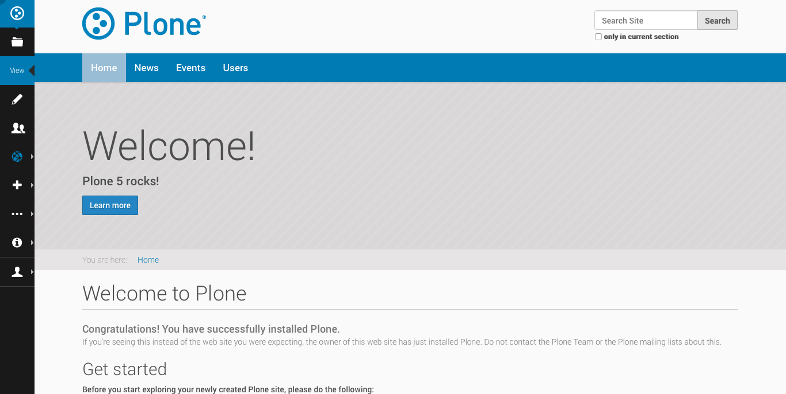
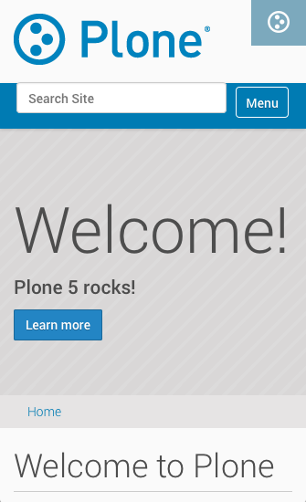
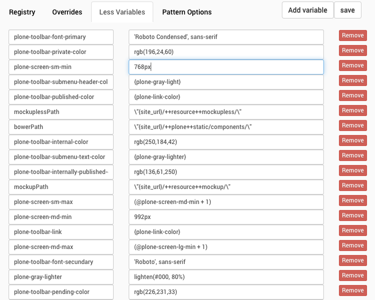
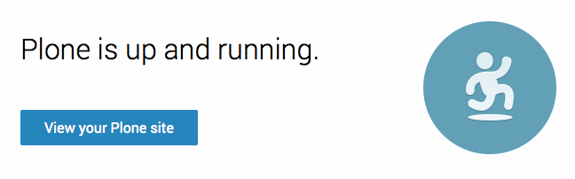

Plone:
Your companion on your travels into the future
Eric Steele & Paul Roeland
A bit of history...
Back in 2002, Brazil wins the world cup in Yokohama.
Firefox wasn't around, we were using Mozilla Suite
or IE6 on XP...
and Plone was nearing the 1.0 release status
We can embellish history a bit more. Retsu and Manabu have been running a Plone usergroup for 10 years!!
“The strongest part of Plone as a technology is that most of its value lies in Plone's vision, goals and approach to solving challenges. The most positive aspect of Plone is actually that the technology is less important - it's not technology for technology's sake.”
Alexander Limi, 2005
All through the history of Plone, it's the people that matter. Alexander Limi, Alan Runyan, but now we've gone through several iterations already.
Values of Plone community
Quality
Tests
Protect investment in current sites
Usability for real people
Stability
Scale from S to XL
Maturing produces results
Some ideas need time.
pendulum swings, the parallel ideas, competing implementations
technology (browser!) not ready
ideas are too radical
need thinking over by 'real' users.
there is such a thing as 'too far ahead of its time'
Software with a vision
Discussions and improvements happen:
online (IRC, community.plone.org)
in add-ons
PLIPs
Framework team
Talking in real life
Sprints
Conferences
Strategic Summits
Summit made clear that Plone has many aspects, both technology and non-technology related. All of these need addressing. That makes it complex, but also so rewarding to be part of the community.
Sorrento 2015
Backend consolidation
Frontend JS frameworks
plone.com and plone.org
Diversity
Marketing
Communication
These are brief topics that were discussed that go beyond Plone 5. If time/interest, we gladly come back to them at the end or talk to us during sprint. But now, let's move on to Plone 5!
Design & Customization
Diazo
Diazo is the new themeing engine we recently introduced. It makes it easy to map your Plone content into any design template.
Plone 5 will use Diazo for theming by default. We want to encourage you to use it too, so want to make it as easy as possible.
Cleaner HTML
Cleaning up the Plone you see when there’s no theme applied. simpler, semantic html. No more base tag. Layout tables are gone. No more misuse of dl and dt elements.
Bettter selectors
act as hooks for your Diazo rules
No built-in grid system
Removed Deco.gs grid system, once again moving away from our homegrown solutions in favor of commonly-used third party ones. We want you to be able choose your own grid or framework. Like Bootstrap or Foundation.
Simpler & faster templates
Plone 5 will use the Chameleon rendering engine. Serves pages around 20% faster. Will require no changes to your existing page templates. But it also does this...
<h1 tal:attributes="title view/title"
tal:content="view/page_name">
</h1>
<h1 title="${view/title}">${view/page_name}</h1>
Barceloneta theme

* Design work by Albert Casado
* CSS 3
* LESS
* Responsive
* Accessible
* Because it's built on Diazo, you can customize it directly TTW using the theme editor
Barceloneta theme

* Design work by Albert Casado
* CSS 3
* LESS
* Responsive
* Accessible
* Because it's built on Diazo, you can customize it directly TTW using the theme editor
Barceloneta theme

* Design work by Albert Casado
* CSS 3
* LESS
* Responsive
* Accessible
* Because it's built on Diazo, you can customize it directly TTW using the theme editor
Exposing theme variables

* Barceloneta will be using LESS in its stylesheets. We’re exposing its variables through the new resource registries control panel. You’ll be able to make adjustments to the base theme here and see them reflected in the site immediately.
The really great thing is that because this is reading from the active styles, your custom themes or add-ons can be tweaked here as well.
Toolbar
* Replaces
* Green bar
* Personal tools menu
* Manage portlets links
Makes editing intuitive, simplifies theming
* Separate site design from site functionality
* __is customizable__ but you won't mess it up accidentally
* You’ll be able to control the default display of the tool bar. Top of the screen or the right. Icons-only or icon and text. Hidden or expanded by default.
Easier management of your content
Multilingual support fully integrated
Plone 5 will be the first release to include multilingual support OOTB.
Will handle both Dexterity and Archetypes content
Smooth migration from LinguaPlone
Editor improvements
Updating to TinyMCE 4. Big improvements to the WYSIWYG interface.
View styles inline in menus.
Improved image/link dialogs
drag and drop images
far better paste-from-word cleanup
Works on mobile devices too.
With the updates to the editor, we can do things like check for spelling, but also more complex checks for accessibility issues.
Require alt , title attributes
Flag complex sentences
Tagging
Updated the tagging fields to allow searching, reordering and deletion.
Related Content
Updated the related content widget. Easily navigate through folders, select the items you want. Search. Quickly reorder and delete.
Folder Contents
* Nathan van Gheem wildcard.foldercontents
* Made the folder contents listing substantially more useful. Make changes to individual items or many at once. Add content directly from this view.
* Note that this is using the fuzzy dates I mentioned earlier.
* Choose which columns you want to display.
* Filter the display or the selection to quickly get the content you’re after.
* Modify workflow, properties, name and title of multiple items at once.
* Upload files via the dialog or just drag and drop them into the folder.
Member data: now easy to extend
Use the Dexterity schema editor to add/modify the fields available during registration.
Security for add-ons
Automated CSRF (cross-site request forgery) protection
Automated click-jacking protection
Automatically rotating keyrings
Plone will automatically prevent an add-on from doing or allowing dangerous things.
We’re preventing you from opening yourself up to two of the most common vectors for attacks.
Improvements all over the place
a real api!
event recurrence
lead image
social media integration
Facebook OpenGraph meta tags
date formatting
Handle date formatting in the browser. Localized, both in format and timezone. Option to use "fuzzy" dates ("one day ago" instead of an explicit date)
change the logo
integrating JS scripts
Migration path
ATCT-> plone.app.contenttypes

September, 2015
plone.org/try-five
Mosaic
A solution that allows dynamic, user-generated composite pages.
In active development, not quite ready for production yet. But do improve and play! Aiming for 5.x.
Plone Intranet
9 well-known Plone consultancy firms
Design First Social is key element
100% open source, code is © Plone Foundation
EDU communities are also moving that way
On a strict schedule, first release expected this summer. Mention Barcelona example as well.
Documentation
learning and cooperating with other communities
#writethedocs community is a great resource
Documentation is versioned and can be translated
Continuous Integration, tests (work in progress)
docs.plone.org
training.plone.org
collectively developed training materials,
Plone 5 and Plone 4 versions
Tested on real students...
Free for trainers to use, adapt, improve
Translatable
Sprint tomorrow!
Sprints are a big part of Plone culture
They improve the code, but most of all they improve the community
ALL levels of experience, and all skills are welcome !!
Friendly help is available, so please feel free to join. Not only tomorrow, but any time in the future